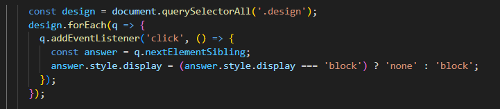
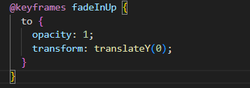
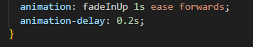

My Code
Click here to go to my repository and see the whole code👇
Challenges I Faced
1. The most difficult coding challenge I encountered occurred in the part of design thinking. When I was coding, I found that it was very difficult to achieve the effect of "expand/collapse". I searched for a lot of materials before understanding how to achieve this in Javascript
- "const design = document.querySelectorAll('.design');"This means to select the elements with "design" in the page
- "design.forEach(q => {"Observe the whole elements, and express them as "q"
- "q.addEventListener('click', () => {"If the mouse clicks on this element, the subsequent content will be triggered
- "const answer = q.nextElementSibling;The triggered content is "answer".
- "answer.style.display = (answer.style.display === 'block') ? 'none' : 'block';"This piece of code is like a "switch", controlling whether the display status of the "answer" section is on or off
2. Also, there is another difficult problem I should solve, which is the animation
By learning how to build some animation online, I know how to do that

First we meed to define the animation, such as the time it moves and the initial point and the final point

Then we need to put the fadeinup animation into the body part
Developer Tools
1. The most useful tool will be: "live server", which can help me to play the background music.

Due to the factor that music cannot be played directly in VS Code, the use of live server has largely helped me solve this difficult problem
Reflection
During the process of establishing this website, I faced many difficulties and challenges. In the initial stage of dealing with HTML, CSS and JavaScript, I didn’t connect the external CSS files to HTML correctly. This made me feel really confused because although I changed the styles in the CSS file, there seemed to be no changes on the web page. Finally, I realized that I had forgotten to link the CSS file in the HTML head section. Once I corrected this mistake, everything was as I expected. The biggest challenge in the process of building a website is how to express my ideas through code. I often have creative ideas about the appearance or function of a page, but I don't know how to write the correct grammar to implement them. Through trial and error and continuous learning, I gradually overcame these difficulties. For example, I want to add the expand/hide function to some text parts. However, I don't know how to write it in JavaScript. After searching online, reading tutorials and seeking help from AI tools, I finally understood how to use these functions. And then I tried to code. Finally, although I still experienced a lot of failure, I got the thing I wanted. This experience taught me the importance of problem-solving, how to use developer tools, and the help of online resources. In addition, I have learned how to make my website more interactive by using the animation. Using methods such as "button" can effectively keep the connection between web pages and readers Establishing this website has taught me a lot. I have learned how to correct mistakes, such as linking CSS to HTML, and how to make ideas into code. Some parts are difficult to make, such as hiding and showing text with JavaScript, but I solved this problem with the help of online tools and learning. I also learned to use animations and make websites responsive. This project helped me improve my coding skills and gave me more confidence.